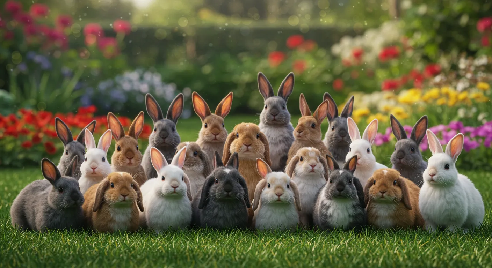
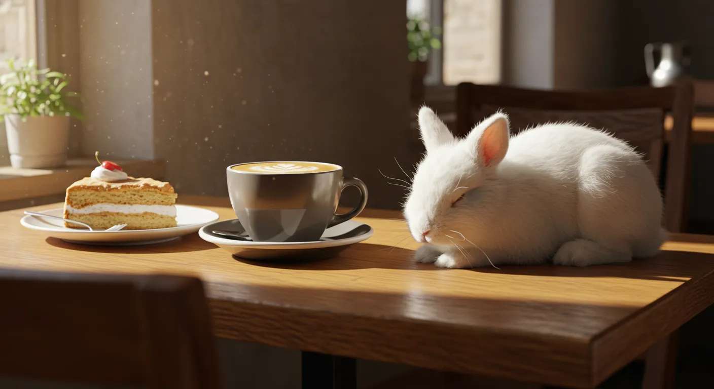
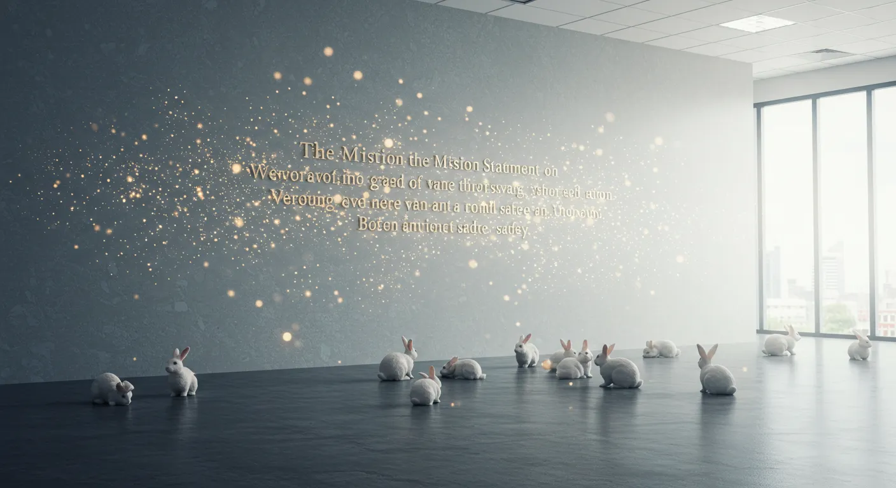
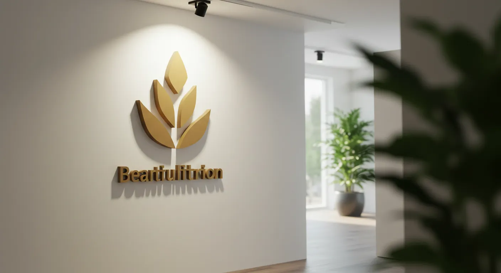
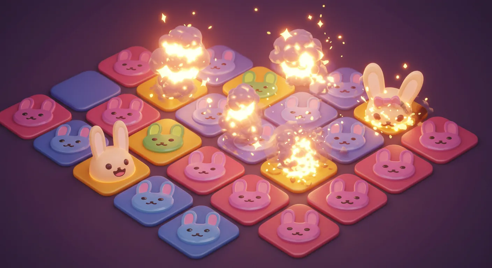
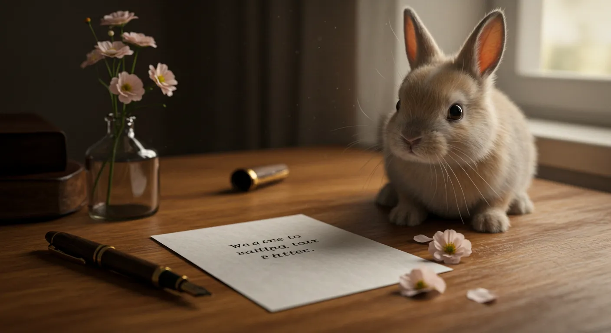
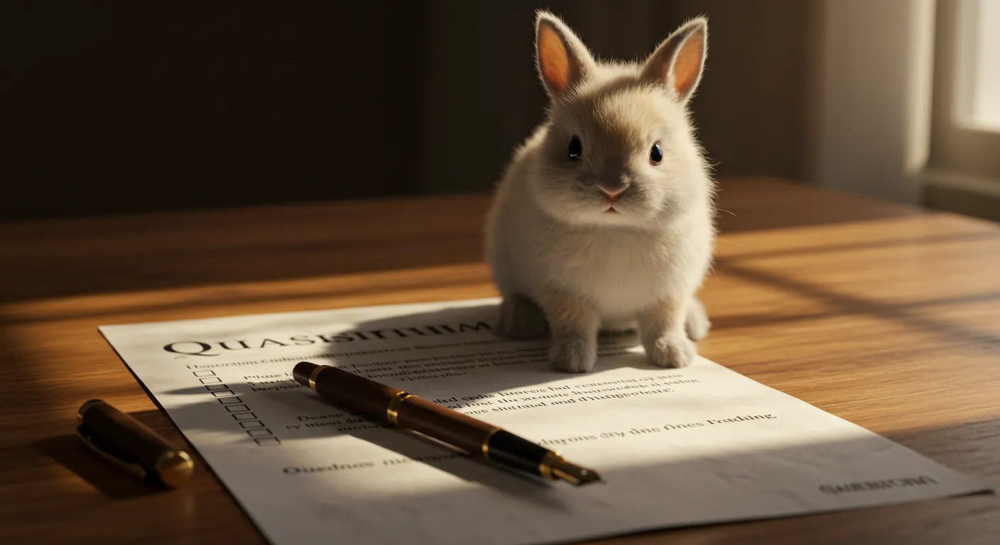

このページは、私が企画からデザイン、実装、コンテンツ制作の全てを手掛けた、架空のうさぎ保護NPO法人「Fuwamoco PROJECT」の公式サイトの全貌をまとめたものです。私のWebサイト制作における総合的なスキルと、「福祉」というテーマへの想いを感じていただければ幸いです。
Fuwamoco PROJECT - 全ページ一覧

サイトの顔
トップページ
団体の活動内容や最新情報を発信する、サイト全体の入り口です。

知識コンテンツ
うさぎについて
うさぎの種類や魅力、生態について詳しく解説する、読み応えのあるコンテンツページです。

店舗紹介
うさぎカフェ
大阪の難波と梅田にある（という設定の）うさぎカフェの店舗情報を紹介します。

理念・ビジョン
私たちについて
団体の経営理念やビジョン、社会への貢献について詳しく説明します。

団体情報
運営団体概要
代表挨拶や団体の詳細情報を掲載し、信頼性を担保します。

エンタメ
3マッチパズル
JavaScriptで実装した、かわいいウサギの絵文字をそろえるパズルゲームです。

フォーム
お問い合わせ
ユーザビリティを考慮した、使いやすいお問い合わせフォームです。

フォーム
お客様アンケート
サービスの改善に繋げるための、詳細なアンケートフォームです。